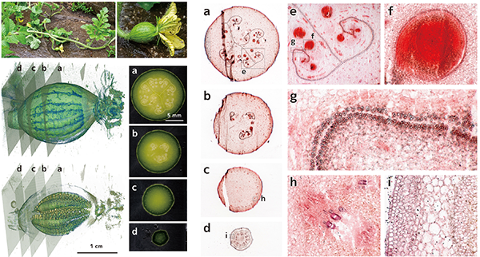
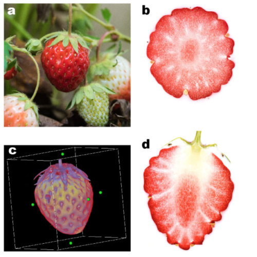
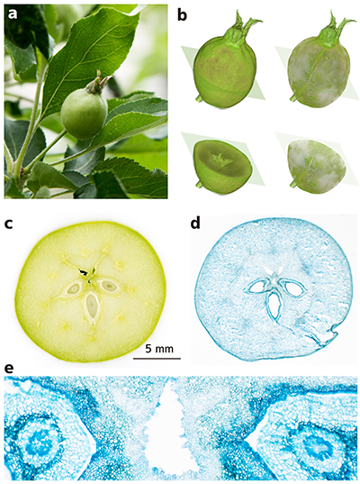
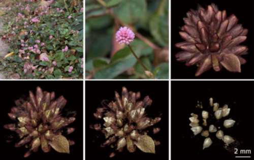
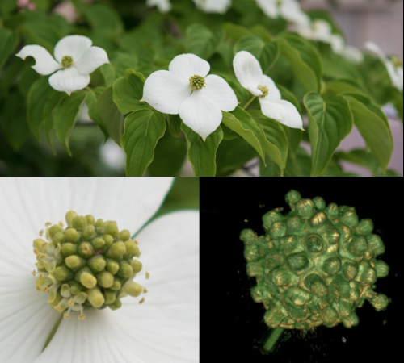
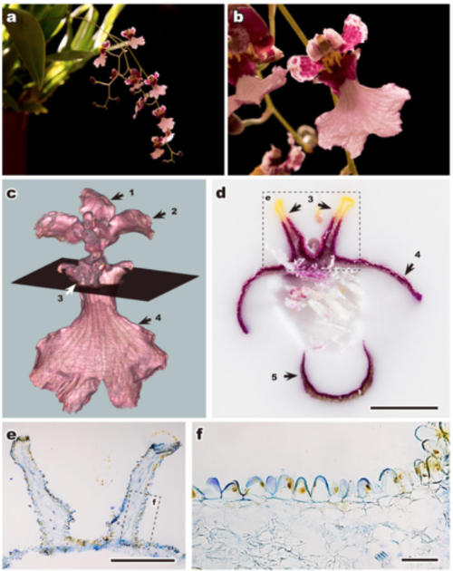
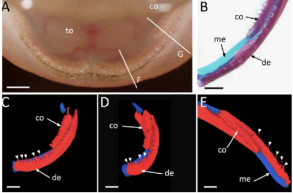
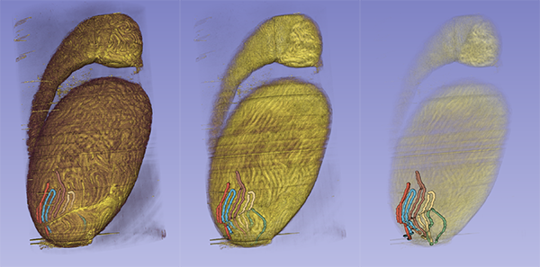
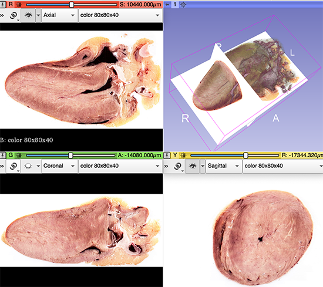

作品集
The data shown here is limited as "plants, animals (already published), foods, and reconstructed images". If you want 3D datasets of other experimental samples, please contact me. Contact information, Tajika Y, Sci Rep (2017) 7:3645).
掲載は「植物、動物（既報）、食材、再構築像」としています。他の研究用試料の3Dデータセットに関してはお問い合わせください（Tajika Y, Sci Rep (2017) 7:3645に記載の連絡先、またはTwitterへ。@CoMBI_artisan）
Watermelon/スイカ

2019.6.15
Strawberry/イチゴ

2017.6.19
Apple/リンゴ

2017.6.19
Polygonum/ヒメツルソバ

2017.6.21
Dogwood/ヤマボウシ

2017.6.19
Oncidium/オンシジューム

2017.6.19
Axolotl/アホロートル

Sci Rep.2020,10:9323
Stag Beetle/クワガタムシ

Sci Rep.2017,7:3645
Mouse/マウス

Sci Rep.2017,7:3645

Mouse testis, segmentation, 精細管を途中までマーク、色分けは作業の都合で、実際はひとつながりです
Chick heart/ニワトリ

食用トリハツ, 3D slicerでの作業画面